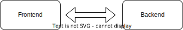
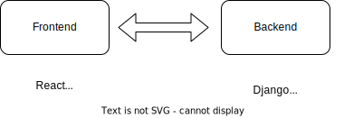

Links [1/2]
- Upcoming training @ Prelude
- Online Q&A about how my workshops work. Tuesday 19 Nov
- Schedule exploratory call with me
- Sheena's blog
To navigate this slide deck: Use cursor keys or click on arrows on bottom right. Use Esc key to toggle overview
Links [2/2]
Why HTMX makes good business sense
What's this all about?
- Fairly new on the scene
- Simplifies web dev
- Not a silver bullet
Hi, I'm Sheena
🧗♀️🏕️🧭🇿🇦🖊️🛠️🔥🐕🎸🙃
|
 |
Modern web dev
- Dynamic, interactive user experiences
- Heavy frontend tooling (eg: React, Vue, etc)
- Backend often built in a different way
Architectural components
Aggressively over simplified
Architectural options
- Only a frontend
- Frontend JS, Backend JS
- Fullstack JS (Eg: NextJs)
- Frontend JS, Backend whatever you need
Realistic example
Challenging...
- Code complexity, many very different moving parts
- Deployment and testing becomes difficult
- Different skills and specialisations needed
Organisations that do web dev
- Backend team / Frontend team
- Teamwork complexities + friction (add more tools? GraphQL?)
- Project management load
- Extra handoffs
General process for solving problems
Add more stuff!
Think different
What would we need to do to HTML to make it good enough to support the modern web?Introducing HTMX
Javascript fatigue
Just another one of those...What is it?
- Tiny, simple JS library
- Allows you to create rich frontend experiences
- By adding a few simple attributes to HTML
But seriously, what is it?
What did it do there?
- User clicks a button (any event will do)
- Browser sends request to server
- Server responds with normal HTML
- Browser puts the HTML on the page
Versus React
see chatBut does it scale?
- How much compute does it need?
- Can it handle complexity
What if I told you
You don't need to write complicated code to build modern web experiencesWhat is simplicity worth?
My project
- Frontend
- React
- Material UI
- Redux
- Redux saga
- Backend
- Django
- Django Rest Framework
- Guardian
Introduced HTMX
- Everyone was productive
- I was more productive too
This is what winning feels like
- Same team members => more value
- Code base smaller + simpler
- Fewer weird bugs => less rework and troubleshooting
- Everyone == Full stack
Remember: Organisations that do web dev
- Backend team / Frontend team
- Teamwork complexities + friction (add more tools? GraphQL?)
- Project management load
- Extra handoffs
But wait, there's more
- Lowers barrier to entry to web dev
- Larger, cheaper talent pool!
- Less risk in taking on junior staff and trying new things
- Juniors get an opportunity to grow
Good for...
- Devs and teams: Build stuff fast with good DX
- Organisations: Simplify processes, add leverage to ICs
- Ecosystem: Lowering barriers to entry
I ❤️ HTMX
I teach this stuff
What it looks like
- Small group => high support
- Expert support
- Highly practical w/ personal projects
- Lovingly crafted
Next workshop 23/24 Nov
- HTMX
- Django
- TailwindCSS
- Playwright
- Alpine.JS
Custom training for orgs and teams
- Ramp up on these tools quickly
- Training crafted for your use-case